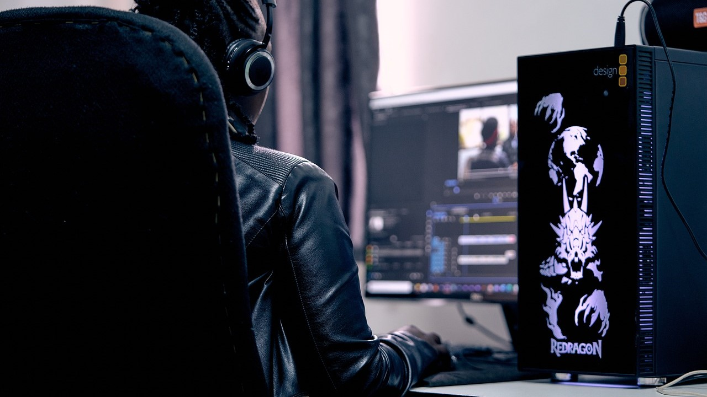
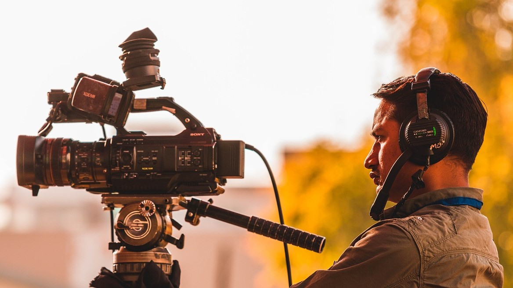

A digitális rajzolás és rajztáblák használatának foglalkozásai kiváló lehetőséget kínálnak azoknak, akik szeretnék elsajátítani a modern művészeti eszközök használatát. Ezeken a foglalkozásokon a résztvevők megismerkedhetnek a digitális rajzprogramokkal, a különböző rajztáblák és stylusok működésével, valamint a digitális művészet alapvető technikáival. A gyakorlatok során a tanulók fejleszthetik rajzkészségüket és kreativitásukat, miközben olyan eszközöket sajátítanak el, amelyekkel professzionális szintű alkotásokat hozhatnak létre. Csatlakozz hozzánk, és fedezd fel a digitális rajzolás izgalmas világát!
Az illusztráció és képregény készítés foglalkozásai tökéletes alkalmat nyújtanak azoknak, akik szeretnék kifejezni történeteiket és ötleteiket vizuális formában. A résztvevők megismerkedhetnek az illusztráció és a képregény készítés technikáival, a karakter- és háttértervezéssel, valamint a vizuális narratíva alapelveivel. Ezek a foglalkozások lehetőséget adnak a tanulóknak, hogy saját egyedi stílusukat alakítsák ki, miközben gyakorlati feladatokkal és szakértői útmutatással fejleszthetik készségeiket. Fedezd fel a képregények és illusztrációk világát, és hozd létre saját vizuális történeteidet!
A rajzfilm készítés foglalkozásai izgalmas lehetőséget kínálnak mindenkinek, aki érdeklődik az animáció és a mozgókép iránt. A résztvevők megtanulhatják az animáció alapvető technikáit, a karakteranimációt, a történetmesélést és a hangtervezést. A foglalkozások során a tanulók saját rövid animációkat készíthetnek, miközben megismerkednek a legmodernebb animációs szoftverekkel és eszközökkel. Ezek a foglalkozások nemcsak a technikai készségek fejlesztésére fókuszálnak, hanem arra is, hogy a résztvevők kreativitását és kifejezőkészségét is gazdagítsák. Csatlakozz hozzánk, és lépj be a rajzfilmkészítés varázslatos világába!
Videószerkesztő és -vágó szoftverek

A videószerkesztő és videóvágó szoftverek napjainkban alapvető eszközök a kreatív tartalomszolgáltatók számára. Ezek a programok lehetővé teszik, hogy professzionális színvonalú videókat hozz létre otthoni környezetben is.
Filmkészítés

Ismerje meg a filmkészítés világát, ahol történetmesélés és vizuális művészet találkozik. Oldalunkon bemutatjuk a filmkészítés különböző fázisait, a forgatókönyvírástól kezdve a forgatáson át az utómunkálatokig, hogy Ön is magabiztosan alkothasson a mozgókép területén.